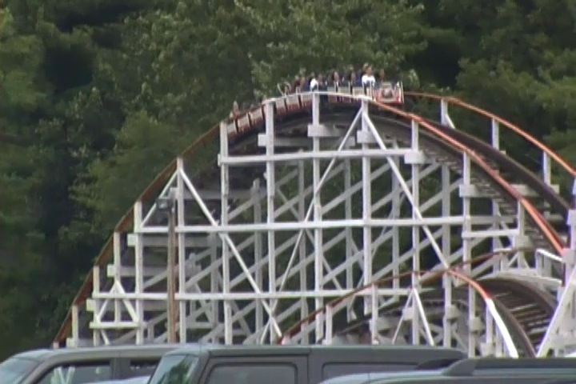
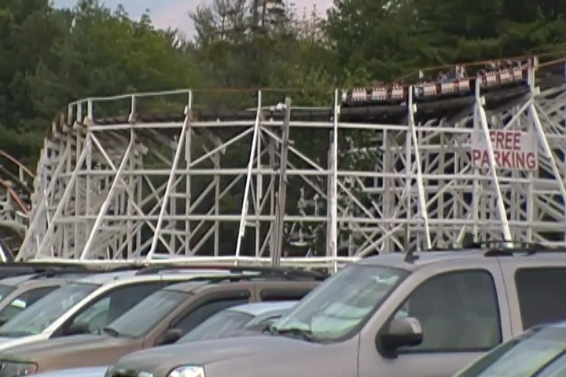
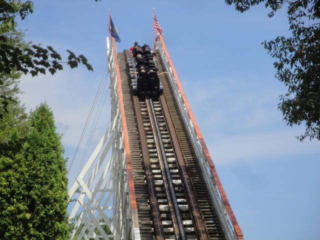
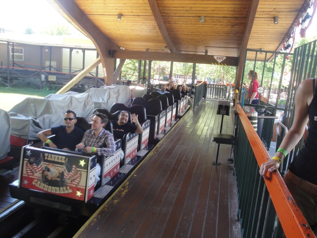

| |
Yankee Cannonball Review

We're here at Canobie Lake Park. Today's ride we'll be reviewing is Yankee Cannonball, the park's classic wooden coaster and a really fun wooden coaster. And when I say classic wooden coaster, I mean it, dating all the way back to the days of the Great Depression. We get in the cars, pull down the buzz bars, and we're off. We roll around a curve and head up the lifthill. It's not very big, but it does its job and we make it to the top of the lifthill, getting a good look at the layout. Doesn't look like anything special. But anyways, we head down the first drop. Nothing special. Wee. We soar up and over a small little hill. It doesn't contain any airtime and is barely noticable at all. So far, nothing is special. We then rise up a decent sized hill, and surprise. A nice little pop of ejector air. That made me smile. =) We then head around the turn, take a good look at the parking lot on our right, and drop back down. We regain our speed and soar up into another hill. And hey, we get some floater air here. So far, this is looking pretty good. We rise up into another hill, get some decent laterals as we head around the turn, get a good view of the parking lot (Hopefully it's not too busy) and head down into another drop. It's not that big, but we've got a nice pace going here and it's just overall, running like a really good roller coaster. We then head up into a small little hill that provides us with both some airtime and laterals. Always a winning combination. We then soar through a tiny hill hill and BAM!!! Ejector Air, and man is it STRONG!!! Our thighs literally get SMACKED against the buzz bar. We head up into another small hill with another powerful moment of ejector air as well as some good laterals as we turn left and start to head on home. To make that journey more exciting, we shred through 4 small little bunny hops, all that provide us with some good airtime. Wee all the way into the brake run, which is mildly tilted and leads us straight into the station. Yankee Cannonball is definetly a fun ride, it's got some nice laterals and even a few moments of strong ejector air. I know I put Yankee Cannonball on my Top 10 Most Underrated Coasters List and I still stand by that (or at least as a runner up). It's definetly an underrated coaster that I suggest you check out when visiting Canobie Lake Park. You won't regret it.
7/10
Location: Canobie Lake Park
Opened at Lakewood Park in 1930
Relocated to Canobie Lake Park in 1936
Built by: Philadelphia Toboggan Coasters
Last Ridden: August 1, 2011
Yankee Cannonball Photos




|